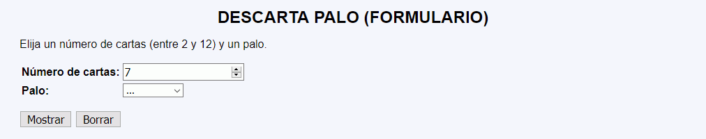
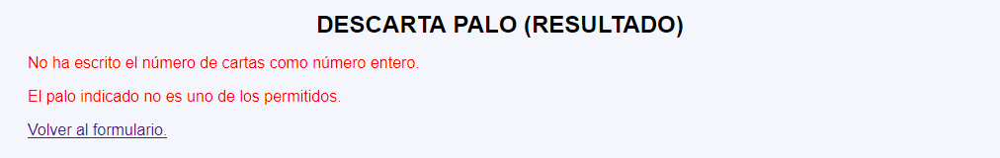
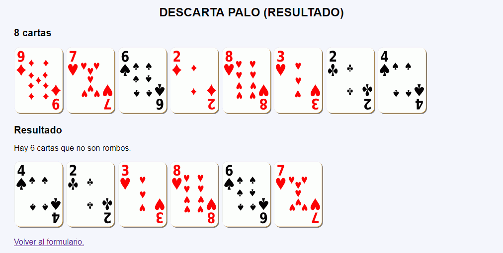
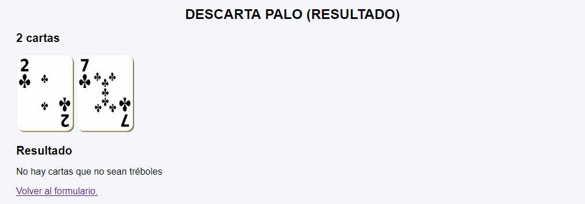

Descarta palo - Comentarios
- El programa tendrá dos páginas:
- La primera página muestra un formulario con dos controles:
- El número de cartas que se va a mostrar (entre 2 y 12).
- El palo que se va a descartar (Corazones, Rombos, Picas o Tréboles)
- La segunda página mostrará:
- Si se han recibido valores incorrectos, los mensajes de error correspondientes.
- El número de cartas indicado por el usuario.
- Las imágenes de las cartas del 1 al 10, al azar.
- El número de cartas que no se han descartado por pertenecer al palo elegido.
- Las imágenes de las cartas que no se han descartado
- La primera página muestra un formulario con dos controles:
- Si se intenta acceder directamente a la segunda página sin pasar por la primera o si se envía a la segunda página información distinta a la esperada, se mostrarán mensajes de error con la información faltante o incorrecta.
- No se deben cambiar los nombres de los controles incluidos en las plantillas.
- Al actualizar la segunda página, se mostrarán cartas distintas, pero la misma cantidad de cartas y descartando el mismo palo.
- Capturas de pantalla de ejemplo:




